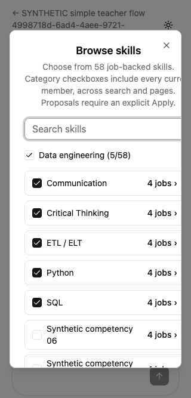
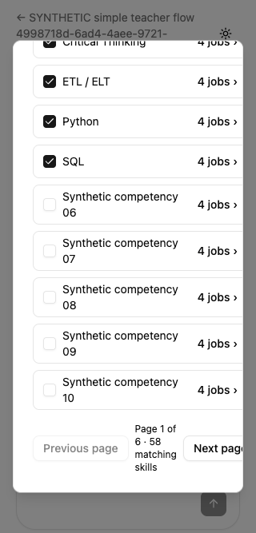
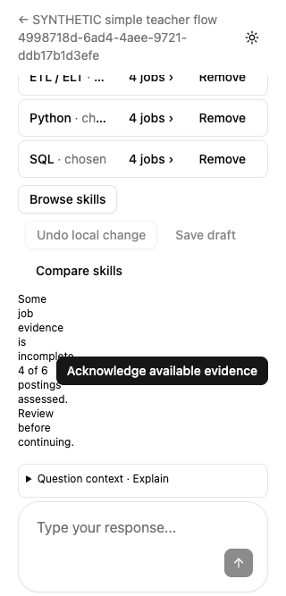
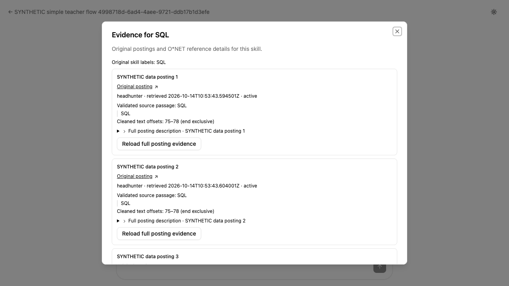
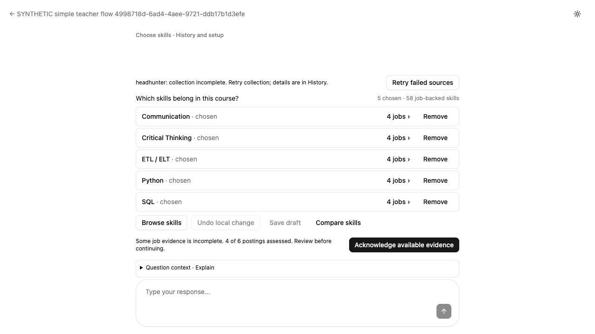
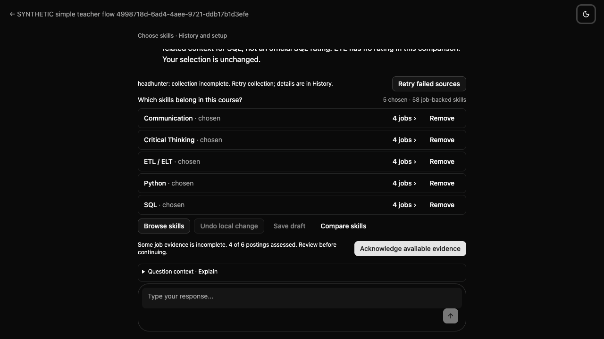

Fresh teacher usability review
8/10 — strong desktop flow; mobile corrections remain
This independent assessment used the running isolated synthetic course on 14 October 2026. The current skill decision is clear, the category draft behaves predictably, and evidence and history are discoverable. Two layout problems remain at 320 pixels wide. Original posting links also have generic labels despite saved titles being available.
Reviewed only the supplied approved requirements and live teacher UI, using headless Chrome through the Playwright skill. No prior scores, reports, application source, or test source were read. No production data was accessed. No saved shortlist changes, acknowledgments, approval, publication, deletion, or application edits were made. Two authorized synthetic Explain requests added conversation messages; the second corrected a coordinator-provided canned-response mismatch.
Observed task results
| Task | Observed behavior and effort |
|---|---|
| Identify current decision / next action | “Choose skills” and “Which skills belong in this course?” are clear. Five chosen skills are visible. Partial evidence is a current explicit decision: “4 of 6 postings assessed” with “Acknowledge available evidence.” It is not hidden in History. |
| Category + cross-page exclusion | Browse → search SQL → select category selected all 58 members, including filtered members. Clear search → Next page → uncheck Synthetic competency 11 → close left 57 chosen. “Review all 57” reopened page 2 with the exclusion retained and category mixed. Six button/checkbox clicks plus search edits complete the draft and check. No save was used; browser reload restored the saved five. |
| Find evidence | One click on SQL or ETL’s “4 jobs ›” opens grouped postings. Four distinct saved external posting URLs are present. ETL shows both “Create ETL pipelines” and “Develop ETL/ELT services” under each posting while retaining a four-job count. Expanding one full description takes one additional click. Long evidence scrolls inside the optional dialog. |
| Compare frequency / O*NET | Compare opens one chart; O*NET importance is a second click. Frequency says 4 of 4 assessed postings with 6 selected and partial coverage. O*NET says original Importance 1–5, Data Scientists, release 31.0. “Programming — related to SQL” has 4.2/5; ETL and the other unmapped choices are unavailable, not zero. The dialog contains five entries and one measure at a time. |
| Explain | Compare → O*NET → Ask about Programming → Send takes four clicks. The Ask control stages a scoped question in the composer. The corrected controlled reply leaves the step “Choose skills,” five selected skills, and the same evidence acknowledgment action. Controlled wording is not evidence of live model quality. |
| History / keyboard / dark | History is one click on the step label. It contains source recovery information and both prior questions/replies. Main controls follow a practical tab order; Enter opens Browse with Search focused; Tab stays within the chooser; Escape restores Browse focus when opened using keyboard. Dark text, borders, chooser, and action remain readable. |
Reproducible findings
1. The 320-pixel chooser exceeds its visible width
Material mobile layout issue. Set the viewport to 320×667, open Browse skills, then scroll the optional dialog to the page controls. Its client width is 286px but scroll width is 329px. The dialog ends at x=304, while Next page ends at x=322.1. The explanatory copy, search field, rows, and pagination exceed the right edge. Paging remains possible, but text and controls require horizontal recovery instead of fitting the screen.




2. The coverage explanation becomes a narrow column at 320 pixels
Material reading issue. At 320×667, scroll the main panel down to the coverage decision. The row is 280px wide while its acknowledgment button is 237.2px wide. The explanation remains beside it, leaving roughly 35px for text and producing a 176px-tall word-by-word column. The action and message box are reachable by scrolling the main panel 303px; the problem is readability and density, not an unreachable action. This is the explanation the teacher must read before acknowledging incomplete evidence.

3. Original posting links have generic labels
Minor clarity / requirement mismatch. Open SQL or ETL evidence. Each posting card has its saved title, such as “SYNTHETIC data posting 1,” but all four external links are labelled “Original posting.” The requirements ask for the saved title and employer when available on the external link. The nearby headings help visually; a list of links still presents four indistinguishable names. No employer was visibly supplied by this fixture, so only the saved title is asserted here.

Viewport and density assessment
| Viewport | Main decision / action | Density and scrolling |
|---|---|---|
| 1280×720 | Main rectangle x256–1024, y60–720; client and scroll height 660px. Evidence action y512–544; Send y655–687. All fit. | No main scrolling. The optional latest-reply log is 50px high and scrolls internally after Explain. Evidence and chart dialogs scroll internally. |
| 1440×900 | Main rectangle x336–1104, y60–900; client and scroll height 840px. Evidence action y692–724; Send y835–867. All fit. | No main scrolling. Decision density stays low: five skill rows and one current action. |
| 390×844 | Main client/scroll height 780px. Evidence action y610–642, Send y785–817. Both fit. | Some labels truncate; optional chooser and O*NET details scroll vertically, with no measured horizontal chooser overflow. |
| 320×667 | Main scroll height 886px vs client583px. Required action and composer are reached with main scrolling. | The two issues above reduce readability. Chooser adds horizontal scrolling. This does not violate desktop’s no-scroll requirement, but small-screen usability needs correction. |
The 8/10 rating reflects clear current prompts and trustworthy context, low effort for common actions, successful draft handling and keyboard access, with deductions for mobile reading and chooser clipping. Desktop is stronger than the smallest mobile layout; the rating is an independent judgment, not a release target.


Explain observation and review limits
The first coordinator-controlled reply used 3.38 / Database Architects while the chart showed 4.2 / Data Scientists. The coordinator identified this as a fixture input error and authorized a second response without those mismatched values. The first immediate screenshot briefly showed “Review analysis setup before continuing,” plus “Conversation ready / Waiting for the current work.” It disappeared by reload. The corrected reply showed no setup warning after 600ms or another 1s, and the original coverage decision remained the next action. This review does not establish a persistent setup blocker.
Before any Explain · First immediate controlled reply · Before corrected Explain · Corrected, settled result · History including both interactions


The coordinator later reported a test-only initial setup snapshot mismatch (occupation objects instead of SOC strings and an omitted country confirmation). It may affect Continue into mapping, which this review did not invoke. It is a fixture limitation, not a production finding.
This fixture begins at Choose skills. Search-term confirmation, job-group selection, changed-choice reconciliation, failed-save retry, save/reload persistence, curriculum fit review, and explicit final mapping approval were not exercised here. Those requirements need the coordinator’s technical acceptance results; this browser review does not infer them from a build or the current screen. Original posting URLs were inspected without navigating to external real postings.
ETL merged quotation evidence · Expanded description · Frequency chart · O*NET chart · Excluded page-2 member · 57-skill draft summary · 390-pixel O*NET comparison